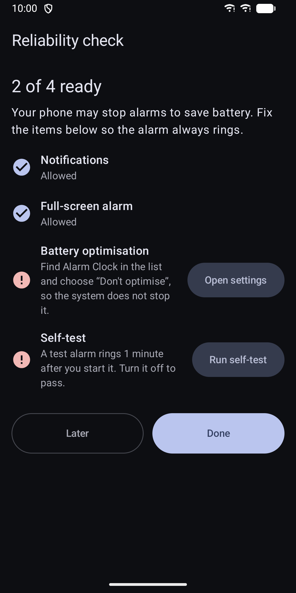

Despertador con misiones
Alarmas fiables para dormilones. Resuelve una tarea para apagar la alarma.



Acerca de la app
Despertador está pensado para quienes no oyen las alarmas normales. Suena en punto, sube el volumen poco a poco y te pide completar una tarea corta antes de dejarte apagarla. ALARMAS - Crea tantas alarmas como quieras, de una sola vez o en los días de la semana que elijas - Añade una etiqueta a cada alarma - Omite solo la próxima vez que suene una alarma repetida - Las alarmas se programan de nuevo tras reiniciar y tras un cambio de hora o de zona horaria - Usa el volumen de alarma, así que suena también con el teléfono en silencio MISIONES PARA DESPERTAR Elige una misión por alarma. No se puede saltar. - Matemáticas: tres niveles de dificultad y tú decides cuántas operaciones - Agitar: agita el teléfono tantas veces como indiques - Código QR o de barras: escanea un código que hayas pegado en un sitio al que tengas que ir andando, como el baño - Pasos: camina el número de pasos que fijes Si una misión falla tres veces, la app ofrece una operación más fácil para que nunca te quedes atascado. Si sales de la misión, la alarma vuelve a sonar al cabo de un minuto. POSPONER Posponer está siempre disponible en la pantalla de la alarma. Fija el intervalo de 1 a 30 minutos y el máximo de posposiciones de 0 a 10, o ilimitado. Una vez iniciada la misión, ya no se puede posponer. SONIDO Y AVISOS - Tonos incluidos, tonos del sistema o tu propio archivo de audio - Si mueves o borras tu archivo, suena un tono incluido, nunca el silencio - El volumen sube durante el tiempo que elijas - Vibración activable por alarma - Estroboscopio opcional con la linterna, desactivado por defecto, con un aviso de fotosensibilidad antes de poder activarlo FIABILIDAD Muchos teléfonos detienen apps para ahorrar batería. Una guía de configuración te lleva por los ajustes de alarmas exactas, notificaciones, pantalla completa y batería. Incluye guías para Xiaomi, Samsung, Huawei, OnePlus, Oppo, Vivo y Realme, y una alarma de prueba que suena un minuto después. EXTRAS - Widget con tu próxima alarma y cuenta atrás - Tema claro y oscuro según el sistema - Funciona en teléfonos y tabletas - Etiquetas para lectores de pantalla y botones grandes - Inglés y alemán PRIVACIDAD La app no tiene permiso de internet, ni cuenta, ni analíticas. Tus alarmas se quedan en tu teléfono. La cámara solo se usa para escanear un código QR en la misión QR. El reconocimiento de actividad solo cuenta pasos en la misión de pasos. Ambos permisos se piden solo cuando los necesitas. Todas las funciones están incluidas en la app. No hay compras dentro de la app. CÓDIGO ABIERTO Despertador es de código abierto bajo la licencia GNU GPL v3 o posterior. Preguntas o comentarios: apps@schimpf.es